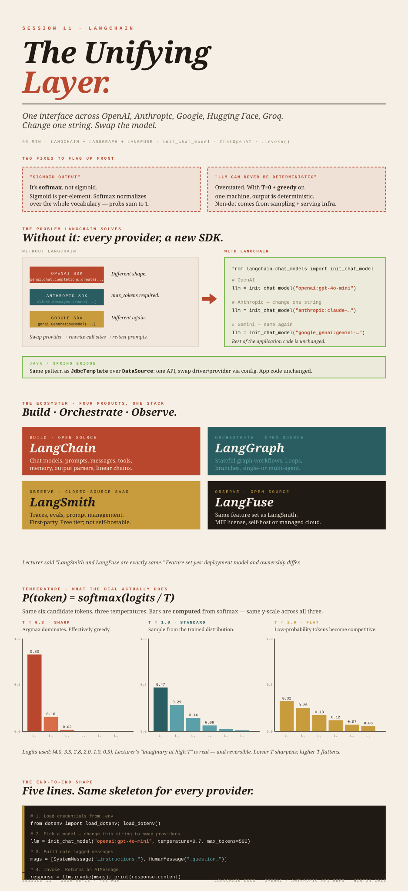

The Unifying
Layer.
One interface across OpenAI, Anthropic, Google, Hugging Face, Groq. Change one string. Swap the model.
init_chat_model, name the model you want, call .invoke(). The same Python code runs against OpenAI, Anthropic, Gemini, Hugging Face, Groq. Swap providers by changing a string — not by rewriting your application.
(1) The student's "most probability word from that sigmoid output" — the LLM head is softmax, not sigmoid. Sigmoid is per-element and doesn't normalize across the vocabulary; softmax does. (2) "LLM can never be deterministic" — overstated. With
T = 0 (greedy decoding) and identical inputs on a single machine, the output is mathematically deterministic. The non-determinism in practice comes from sampling (T > 0) and provider-side serving (batching + GPU float non-associativity) — not from the architecture being intrinsically probabilistic.
The Python runway
If you've never run Python before, here's the minimum to get to "I just called an LLM":
# 1. Install Python 3.11+ (check with: python3 --version)
# 2. Create a virtual environment in the project folder
python3 -m venv .venv
source .venv/bin/activate # on macOS/Linux
# .venv\Scripts\activate # on Windows
# 3. Install the LangChain packages you need
pip install langchain langchain-openai python-dotenv
# 4. Create a .env file with your API key
echo "OPENAI_API_KEY=sk-..." > .env
# 5. Run a script
python my_script.pyThat's the Python equivalent of mvn install + mvn exec:java. A virtual environment (venv) is like a per-project classpath — keeps dependencies isolated from the system Python. Everything below assumes you're inside an activated venv.
The portability problem
Each provider has its own API and its own SDK:
- OpenAI —
openai.chat.completions.create(model="gpt-4o", messages=[...]) - Anthropic —
client.messages.create(model="claude-3-5-sonnet-latest", messages=[...], max_tokens=...). Notemax_tokensis required, not optional. - Google Gemini —
genai.GenerativeModel("gemini-2.0-flash").generate_content(...)— different shape entirely. - Hugging Face Inference API — yet another shape, with
pipeline()orInferenceClient.
If your app is written against OpenAI and you decide to try Claude, the calls aren't drop-in. You re-learn the SDK, change call sites, re-test prompts because each provider's idiosyncrasies surface differently. Multiply that by every model you want to evaluate and you've built a maintenance problem before shipping a feature.
This is exactly the problem DataSource + JdbcTemplate solved for databases: one driver per vendor; one common interface for application code. Change the JDBC URL, swap the driver, the application doesn't notice. LangChain is the same idea for LLM providers.
The ecosystem — four products, one stack
| Product | Purpose | Open source? |
|---|---|---|
| LangChain | Build: model wrappers, prompts, messages, tools, memory, output parsers. Linear chains. | Yes (MIT). |
| LangGraph | Orchestrate: stateful, graph-based workflows. Loops, branches, multi-agent systems. | Yes (MIT). |
| LangSmith | Observe + evaluate: tracing, prompt versioning, eval datasets, replay. | No — closed-source SaaS (free tier exists). |
| LangFuse | Same observability/eval feature set as LangSmith. | Yes — open source + self-host + managed cloud. |
The lecturer's pairing — "LangSmith and LangFuse, they are mostly same" — is half right. The feature set overlaps heavily (traces, evals, prompt management, datasets). The deployment model and ownership differ: LangSmith is LangChain's closed-source SaaS; LangFuse is independent, MIT-licensed, and self-hostable. If observability is the only axis, treat them as interchangeable. If you care about vendor lock-in, self-hosting, or pricing model, they're meaningfully different.
The lecturer framed it as "LangChain is for single agent; LangGraph is for multi-agent." The cleaner distinction is: LangChain provides components and simple linear chains; LangGraph is for stateful workflows with explicit graph-based control flow — which can be single-agent with branches/loops or multi-agent. Many real apps use LangGraph for single-agent loops because they need cycles (retry, reflect, tool-use) that linear chains can't express.
What about "Deep Agents"?
The lecturer mentioned a newer component called Deep Agents. This is real: LangChain released deepagents (github.com/langchain-ai/deepagents) — a thin, opinionated library on top of LangGraph that bundles four patterns observed in production agents: a planning prompt, sub-agents, file-system-style state, and tool-use templates. We'll get to it after RAG.
The modules at a glance
Inside the LangChain core, the modules you actually use day-to-day:
- Chat models — provider-agnostic LLM wrappers (
ChatOpenAI,ChatAnthropic,ChatGoogleGenerativeAI, …). All expose.invoke(),.stream(),.batch(). - Messages —
SystemMessage,HumanMessage,AIMessage,ToolMessage. Structured roles in the conversation. - Prompts —
PromptTemplate,ChatPromptTemplate. Parameterized, versionable prompts. - Tools — functions the model can call. Covered in the agent class.
- Memory — conversation state across turns. Covered when we build the chatbot.
- Streaming — token-by-token output for responsive UIs.
- Structured output — force the model to return JSON or a typed object instead of free text.
This session covers chat models and messages. The rest follows in subsequent sessions.
The chat model API
The unifying entry point in current LangChain is init_chat_model. One function, one syntax:
from langchain.chat_models import init_chat_model
llm = init_chat_model(
"openai:gpt-4o-mini", # provider:model
temperature=0.7,
max_tokens=1000,
)
response = llm.invoke("What is LangChain?")
print(response.content)Want to switch to Anthropic? Change the string:
llm = init_chat_model("anthropic:claude-3-5-haiku-latest", temperature=0.7, max_tokens=1000)Want Gemini?
llm = init_chat_model("google_genai:gemini-2.0-flash", temperature=0.7)The provider-specific classes still exist and are still used (especially when you need a provider-specific feature):
from langchain_openai import ChatOpenAI
from langchain_anthropic import ChatAnthropic
from langchain_google_genai import ChatGoogleGenerativeAI
from langchain_huggingface import ChatHuggingFace, HuggingFaceEndpoint
llm = ChatOpenAI(model="gpt-4o-mini", temperature=0.7, max_tokens=1000)Both styles call .invoke(...) the same way downstream. Rule of thumb: start with init_chat_model for application code; reach for the provider class only when you need a provider-specific feature (e.g., Anthropic's prompt caching, OpenAI's structured-outputs schema). The lecturer's demo used the provider-specific classes, which is the more common pattern in older tutorials and still works.
The chat-model abstraction is JdbcTemplate over DataSource. You configure once (init_chat_model("openai:gpt-4o-mini")), then your code calls .invoke(). Swap providers by changing the configuration string — your service-layer code doesn't change.
The required Python packages
Each provider lives in its own integration package so you don't pull in dependencies you don't need:
pip install langchain langchain-openai langchain-anthropic langchain-google-genai \
langchain-huggingface langchain-groq langchain-mistralai langchain-coherelangchain itself is the core (chat-model abstraction, messages, prompts, runnables). Each langchain-<provider> adds the wrapper for that vendor.
The version-churn warning the lecturer raised — it's real
LangChain has had breaking changes more than once. The most recent big one was the split of langchain into langchain-core, langchain (orchestration), langchain-community (third-party integrations), and provider-specific packages like langchain-openai. Code from 2023 will often not run on 2025 LangChain without imports being updated. Pin your versions in requirements.txt or pyproject.toml, and budget time for upgrades.
Messages: System, Human, AI
Modern chat models are trained on role-tagged conversations. LangChain mirrors that with three message classes:
from langchain_core.messages import SystemMessage, HumanMessage, AIMessage
messages = [
SystemMessage(content="You are a helpful assistant. Keep answers short."),
HumanMessage(content="What is LangChain?"),
]
response = llm.invoke(messages) # response is an AIMessage
print(response.content)SystemMessage— your instructions to the model. Persona, format constraints, style. Sent at the top of every turn. The lecturer's example: "You are a math professor expert in calculus."HumanMessage— what the user asked. The actual question/prompt.AIMessage— what the model replied. You don't construct these for the first turn; you receive them from.invoke(). In multi-turn conversations you keep them in the message list so the model has context.
There's a fourth, ToolMessage, that carries the result of a tool call — relevant when we cover agents.
Think of SystemMessage as configuration injected at startup (@Value-style or application.properties), while HumanMessage and AIMessage are per-request DTOs. The bridge breaks in one important place: the system message isn't applied once at construction; it's re-sent with every call, because chat-model APIs are stateless. The model has no memory between .invoke() calls unless you put the prior messages back in the list yourself.
Model parameters: temperature, max_tokens, max_retries
The three you'll see most often:
| Parameter | What it does | Typical range |
|---|---|---|
temperature | Sampling sharpness. Divides logits by T before softmax. 0 ≈ greedy; 1 standard; >1 flatter. | 0.0 – 2.0 |
max_tokens | Cap on the number of output tokens the model can generate. | provider-dependent; commonly 1–8K or higher |
max_retries | How many times the LangChain client retries on transient errors before giving up. | small integers (2–6) |
The lecturer said "2 million is the limit, right? So it can generate very, very lengthy answers." That conflates two different parameters. Context window is the total token capacity the model can attend to (input + output combined) — for Gemini 1.5 Pro this is indeed 2M.
max_tokens is the per-call cap on the output portion alone. You set max_tokens=1000 to say "don't generate more than 1000 tokens of response." Different parameters with different meanings.
Temperature, and why "LLMs aren't deterministic" needs nuance
This is where the lecturer made the strongest claim — "LLM can never be deterministic. Let me repeat: LLM cannot be deterministic." — and where the substance needs pinning down.
What temperature actually does
Recall from Session 10: the final layer of the decoder produces a vector of logits — one real number per token in the vocabulary (≈30,000–200,000 tokens depending on the model). To turn that into a probability distribution, the model applies softmax:
Temperature T is a divisor inserted before softmax:
That single division has three regimes:
T → 0— dividing by a tiny number blows the largest logit far beyond the rest. Softmax sends the top logit to ~1 and everything else to ~0. The model becomes effectively greedy — always picks the argmax.T = 1— no change. Standard softmax. The model samples according to its trained distribution.T > 1— divides logits down, flattening the distribution. Low-probability tokens become competitive. Output becomes "more creative" but also more likely to drift or hallucinate.
The lecturer's intuition — "low temperature, it will always pick very high probability words; high temperature, it gets the option to select anything" — is right. The mechanism is the one division above.
The student's answer that the lecturer accepted was "it will pick the most probability word from that sigmoid output." The output head of an LLM uses softmax, not sigmoid. Sigmoid is per-element and bounded to (0, 1); it doesn't normalize across the vocabulary so the probabilities sum to 1. Softmax does. The model's "next-token distribution" only makes sense because softmax normalizes.
Are LLMs deterministic or not?
Three claims, separated:
- The model itself is deterministic given identical inputs and identical sampling state. A forward pass through a Transformer is matrix algebra. Same weights + same input + same RNG seed → same logits, every time.
- Greedy decoding (
T = 0, no sampling) on a single machine produces deterministic outputs. No randomness — just argmax over logits at each step. - In practice, calls to hosted APIs are not deterministic, even at low temperature. Three reasons: (a)
T > 0means you're sampling from a distribution — by definition non-deterministic; (b) batching on the provider side changes which sequences run together, and floating-point matrix multiplications are not associative on GPU (infloat16/bfloat16,(a + b) + canda + (b + c)can differ in the last bits), so identical inputs in different batches can produce slightly different logits; (c) some providers don't pin RNG seeds or add small jitter intentionally.
So the lecturer's claim is partly right and partly overstated. The right summary: treat hosted LLM outputs as non-deterministic by default for engineering purposes, but understand that the non-determinism comes from sampling + serving infrastructure, not from the architecture being intrinsically probabilistic. That distinction matters when you start writing evals — you'll want temperature=0 and the seed parameter (OpenAI and a few others now accept one) to maximize reproducibility, even though you can't fully guarantee it on a hosted endpoint.
Hallucination, briefly
The lecturer's line — "hallucination cannot be 0%. Even if it is 0 today, after 1 year, 2 years, we may get some hallucination" — gives the wrong shape. Hallucination isn't a defect that drifts over time. It's intrinsic to autoregressive next-token sampling without grounded truth-checking: the model emits whatever distribution its weights produce; it has no built-in mechanism to verify a fact against the world. RAG, fine-tuning, tool-use, and verification layers reduce the rate; nothing currently eliminates it. The right mental model is "always present, often manageable" — not "going up and down by model release."
The .env file and key management
API keys are credentials. The lecturer's analogy — "it's like your credit card" — is right. If someone gets your OpenAI key, they can run requests on your account and bill you.
The standard pattern in Python projects:
- Store keys in a
.envfile at the project root:OPENAI_API_KEY=sk-... ANTHROPIC_API_KEY=sk-ant-... GOOGLE_API_KEY=... HUGGINGFACEHUB_API_TOKEN=hf_... GROQ_API_KEY=... - Load it at startup with
python-dotenv:from dotenv import load_dotenv load_dotenv() # reads .env into os.environ - Never commit
.envto git. Add.envto.gitignore. Add a.env.examplewith empty values so collaborators know what variables are needed. - Read from
os.environin code, not from hardcoded strings. LangChain provider classes auto-pick up the standard env var names (OPENAI_API_KEY,ANTHROPIC_API_KEY, etc.) — you usually don't have to pass keys explicitly.
This is application.properties + @Value("${openai.api.key}") + Spring profiles for environment overrides. Same pattern: externalize secrets, never commit them, load at startup. In Spring you'd often combine with Vault / AWS Secrets Manager / Azure Key Vault in production. The .env pattern is the dev-loop equivalent.
Where to get the keys
- OpenAI — platform.openai.com → API keys → Create new secret key. Shown once; copy immediately.
- Anthropic — console.anthropic.com → API keys → Create key. Same one-shot reveal.
- Google AI Studio — aistudio.google.com/apikey. Gemini has a free tier (the lecturer's "1,000 / 100,000 per day" figure was approximate and changes; check current quotas).
- Hugging Face — huggingface.co → Settings → Access Tokens. Free; required for most non-trivial use.
The lecturer's "all projects under $5–$10" claim is realistic for course-level usage. On gpt-4o-mini (currently $0.15 / 1M input tokens, $0.60 / 1M output tokens), a chat session costs fractions of a cent. Don't conflate this with production cost at scale — that's a different conversation.
The end-to-end shape
Here's the entire "call an LLM through LangChain" pattern:
import os
from dotenv import load_dotenv
from langchain.chat_models import init_chat_model
from langchain_core.messages import SystemMessage, HumanMessage
# 1. Load credentials from .env into os.environ
load_dotenv()
# 2. Pick a model. Change this string to swap providers.
llm = init_chat_model("openai:gpt-4o-mini", temperature=0.7, max_tokens=500)
# 3. Build the message list (roles)
messages = [
SystemMessage(content="You are a concise technical writer."),
HumanMessage(content="Explain LangChain in two sentences."),
]
# 4. Invoke. Returns an AIMessage.
response = llm.invoke(messages)
# 5. Use the response
print(response.content)To switch to Anthropic, change the model string in the init_chat_model(...) call to "anthropic:claude-3-5-haiku-latest". To switch to Gemini, change it to "google_genai:gemini-2.0-flash". Nothing else moves.
Interview-level summary
Three questions you should be able to answer cleanly:
- Why does LangChain exist? Provider SDKs are mutually incompatible. LangChain is a unifying abstraction so application code is provider-agnostic — swap models by changing a string, not the call site.
- What's the difference between LangChain and LangGraph? LangChain provides components (models, prompts, memory, tools) and simple linear chains. LangGraph builds on those for stateful, graph-based workflows — loops, branches, multi-agent systems. Single vs multi-agent is the rough cut; the deeper cut is "linear" vs "stateful graph with control flow."
- What is temperature, technically? A divisor on the logits before softmax:
P(token) = softmax(logits / T). LowTsharpens to argmax (effectively greedy);T = 1is standard sampling;T > 1flattens the distribution, making low-probability tokens competitive.
Where we go next
Next session: prompt engineering — system vs human prompts, zero-shot / few-shot / chain-of-thought / ReAct — then we build a first chatbot end-to-end with LangChain. After that:
- A first RAG pipeline (retrieve relevant chunks, stuff into context, generate)
- LangGraph for agent loops
- Tools / function calling as a first-class LangChain feature
- LangFuse for observability of the resulting app
The architectural arc (Sessions 7–10) ends here. From Session 11 forward, the course is building applications on top of pre-trained, hosted models — and LangChain is the connective tissue.

Glossary
- Chain
- A LangChain composition of components (prompt + model + parser, etc.) wired together. The simplest form is linear: input → component → output.
- Chat model
- A LangChain wrapper around a provider's chat-completion API. Exposes
.invoke(),.stream(),.batch(). Examples:ChatOpenAI,ChatAnthropic,ChatGoogleGenerativeAI. - Context window
- The total token capacity a model can attend to in a single call (input prompt + previous turns + output). Different from
max_tokens, which caps only the output. - init_chat_model
- The unified factory in current LangChain:
init_chat_model("provider:model", ...). Returns a provider-appropriate chat model. - .invoke(messages)
- The standard call into a LangChain runnable. Returns an
AIMessagefor chat models. Also.stream()(yields tokens) and.batch()(parallel calls). - LangChain
- Open-source Python/TS framework for building LLM applications. Provides provider-agnostic abstractions for models, prompts, messages, tools, memory, and output parsing.
- LangFuse
- Open-source observability and evaluation platform for LLM applications. Self-hostable or managed cloud. Feature overlap with LangSmith.
- LangGraph
- LangChain's library for stateful, graph-based workflows. Suitable for agent loops (single or multi), branching logic, and anything a linear chain can't express cleanly.
- LangSmith
- LangChain's closed-source SaaS for tracing, evaluation, and prompt management. Free tier exists; not self-hostable.
- max_tokens
- Per-call cap on the output length the model is allowed to generate. Not the same as the context window.
- Message roles (system / human / AI / tool)
- Structured turns in a chat conversation. System = instructions; Human = user input; AI = model output; Tool = tool-call result.
- Sampling
- At each generation step, drawing a token from the model's probability distribution (rather than always picking the argmax). Required for any
T > 0. - Softmax
- The function that turns a vocabulary-sized logit vector into a probability distribution:
softmax(x_i) = exp(x_i) / Σ_j exp(x_j). The output head of every LLM. - Temperature
- Sampling-time scalar
Tthat divides logits before softmax.T → 0sharpens to argmax;T = 1is unchanged;T > 1flattens the distribution. - .env file
- Project-root file holding environment variables (typically secrets) loaded into
os.environat startup bypython-dotenv. Never committed.